Chapter 11 Additional Community Typing
# Load data
library(mia)
data(enterotype)
tse <- enterotype11.1 Community composition
11.1.1 Composition barplot
The typical way to visualise the microbiome compositions is by using a composition barplot. In the following, we calculate the relative abundances and the top 10 taxa. The barplot is ordered by “Bacteroidetes”:
library(miaViz)
# Remove unwanted taxon
tse <- subsetTaxa(tse, rownames(tse) != "-1")
# Only consider Sanger technique
mat <- subsetSamples(tse, colData(tse)$SeqTech == "Sanger")
# Get top taxa
rel_taxa <- getTopTaxa(tse, top = 10, abund_values = "counts")
# Take only the top taxa
mat <- subsetTaxa(mat, is.element(rownames(tse), rel_taxa))
# Visualise composition barplot, with samples order by "Bacteroides"
plotAbundance(mat, abund_values = "counts",
order_rank_by = "abund", order_sample_by = "Bacteroides")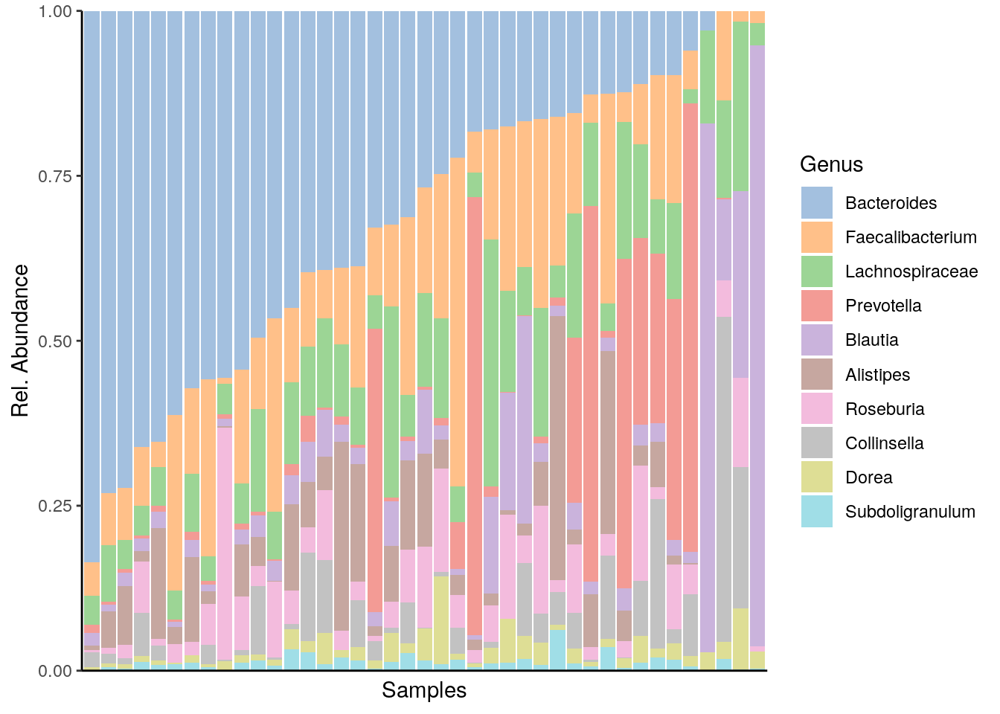
11.1.2 Composition heatmap
Community composition can be visualised with a heatmap. The colour of each intersection point represents the abundance of a taxon in a specific sample.
Here, the CLR + Z-transformed abundances are shown.
library(pheatmap)
library(grid)
library(RColorBrewer)
# CLR and Z transforms
mat <- transformCounts(tse, abund_values = "counts", method = "clr", pseudocount = 1)
mat <- transformFeatures(mat, abund_values = "clr", method = "z")
# Take only the top taxa
mat <- subsetTaxa(mat, is.element(rownames(tse), rel_taxa))
# For annotating heat map
SeqTechs <- data.frame("SeqTech" = colData(mat)$SeqTech)
rownames(SeqTechs) <- colData(mat)$Sample_ID
# count matrix for pheatmap
mat <- assays(mat)$z
# Make grid for heatmap
breaks <- seq(-2, 2, length.out = 10)
setHook("grid.newpage", function() pushViewport(viewport(x = 1, y = 1, width = 0.9,
height = 0.9, name = "vp",
just = c("right","top"))),
action = "prepend")
pheatmap(mat, color = rev(brewer.pal(9, "RdBu")), breaks = breaks, main = "SeqTechs", treeheight_row = 0, treeheight_col = 0, show_colnames = 0, annotation_col = SeqTechs, cluster_cols = F)
setHook("grid.newpage", NULL, "replace")
grid.text("Sample", x = 0.39, y = -0.04, gp = gpar(fontsize = 16))
grid.text("Genus", x = -0.04, y = 0.47, rot = 90, gp = gpar(fontsize = 16))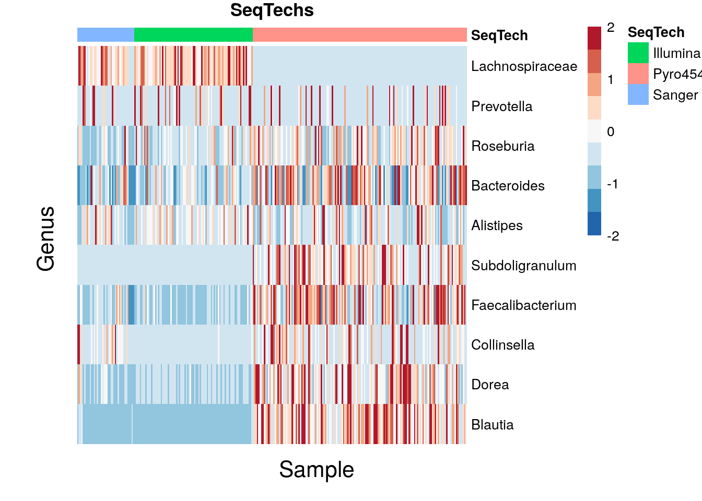
11.2 Cluster into CSTs
The burden of specifying the number of clusters falls on the researcher. To help make an informed decision, we turn to previously established methods for doing so. In this section we introduce three such methods (aside from DMM analysis) to cluster similar samples. They include the Elbow Method, Silhouette Method, and Gap Statistic Method. All of them will utilise the `kmeans’ algorithm which essentially assigns clusters and minimises the distance within clusters (a sum of squares calculation). The default distance metric used is the Euclidean metric.
The scree plot allows us to see how much of the variance is captured by each dimension in the MDS ordination.
library(ggplot2); th <- theme_bw()
# reset data
tse <- enterotype
# MDS analysis with the first 20 dimensions
tse <- scater::runMDS(tse, FUN = vegan::vegdist, method = "bray",
name = "MDS_BC", exprs_values = "counts", ncomponents = 20)
ord <- reducedDim(tse, "MDS_BC", withDimnames = TRUE)
# retrieve eigenvalues
eigs <- attr(ord, "eig")
# variance in each of the axes
var <- eigs / sum(eigs)
# first 12 values
df <- data.frame(x = c(1:12), y = var[1:12])
# create scree plot
p <- ggplot(df, aes(x, y)) +
geom_bar(stat="identity") +
xlab("Principal Component") +
ylab("Variance") +
ggtitle("Scree Plot")
p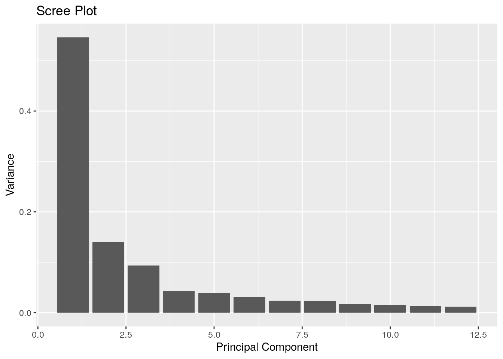
From the scree plot (above), we can see that the two principal dimensions can account for 68% of the total variation, but at least the top 4 eigenvalues are considerable. Dimensions beyond 3 and 4 may be useful so let’s try to remove the less relevant dimensions.
# histogram of MDS eigenvalues from the fifth dimension onward
h <- hist(eigs[5:length(eigs)], 100)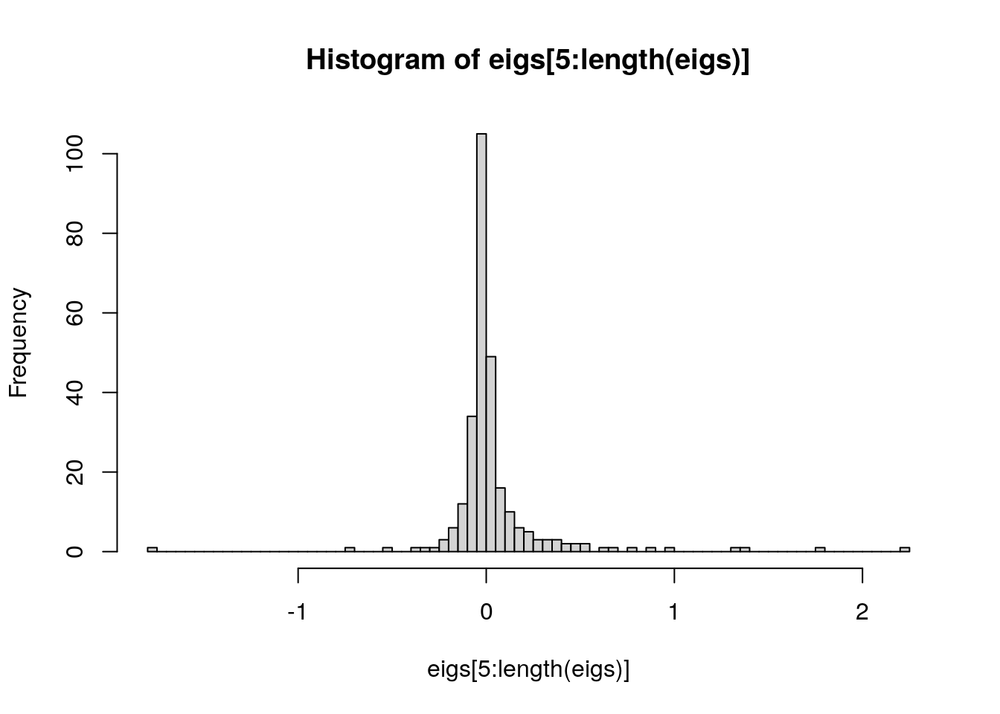
plot(h$mids, h$count, log = "y", type = "h", lwd = 10, lend = 2)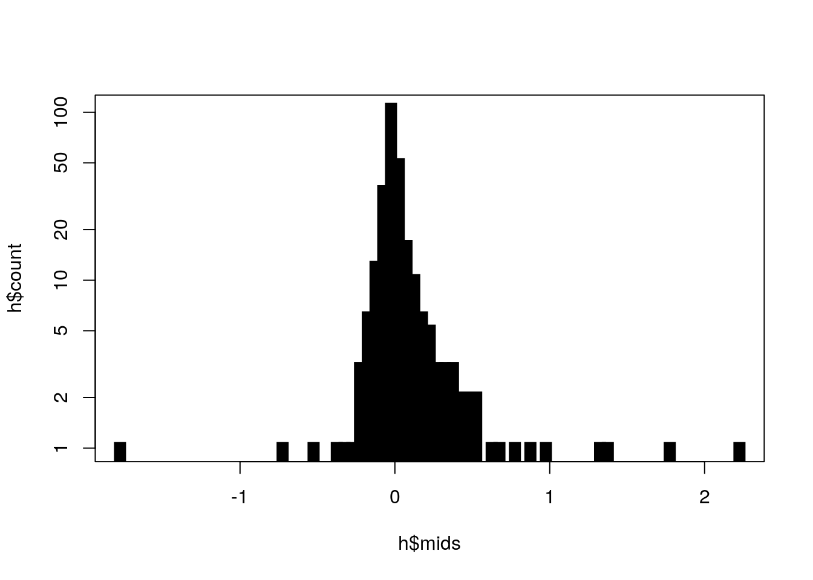
As you can see, dimensions 5, 6, and 7 still stand out so we will include 7 MDS dimensions.
11.2.1 Elbow Method
This method graphs the sum of the sum of squares for each \(k\) (number of clusters), where \(k\) ranges between 1 and 10. Where the bend or `elbow’ occurs is the optimal value of \(k\).
library(factoextra)
# take only first 7 dimensions
NDIM <- 7
x <- ord[, 1:NDIM]
# Elbow Method
factoextra::fviz_nbclust(x, kmeans, method = "wss") +
geom_vline(xintercept = 3, linetype = 2) +
labs(subtitle = "Elbow Method") + th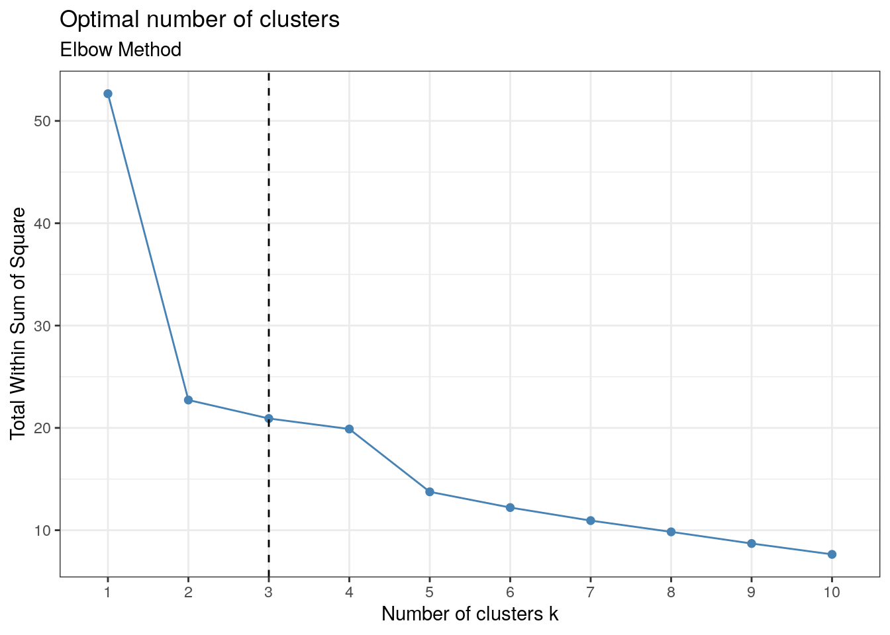
As you can see, the bend occurs at \(k=3\), implying there are three clusters present in the enterotype data.
11.2.2 Silhouette Method
This method on the otherhand returns a width for each \(k\). In this case, we want the \(k\) that maximises the width.
# Silhouette method
factoextra::fviz_nbclust(x, kmeans, method = "silhouette") +
labs(subtitle = "Silhouette method") + th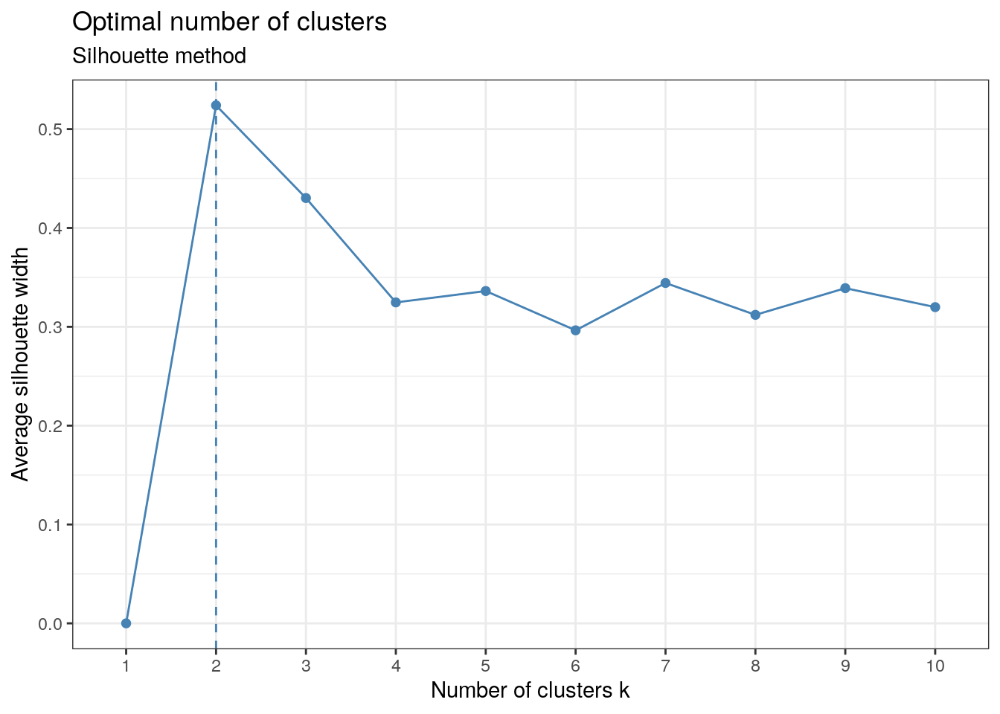
The graph shows the maximum occurring at \(k=2\). \(k=3\) is also strongly suggested by the plot and is consistent with what we obtained from the elbow method.
11.2.3 Gap-Statistic Method
The Gap-Statistic Method is the most complicated among the methods discussed here. In the plot produced, we want the \(k\) value that maximises the output (local and global maxima), but we also want to pay attention to where the plot jumps if the maximum value doesn’t turn out to be helpful.
# Gap Statistic Method
factoextra::fviz_nbclust(x, kmeans, method = "gap_stat", nboot = 50)+
labs(subtitle = "Gap Statistic Method") + th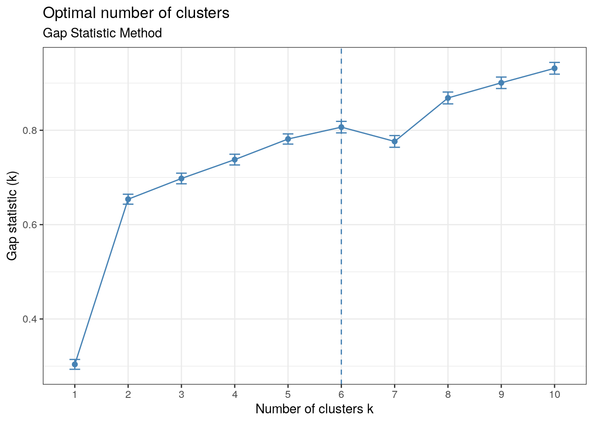
\(k=6\) clusters, as the peak suggests, would not be very revealing since having too many clusters can cease to be revealing and so we look to the points where the graph jumps. We can see this occurs at \(k=2\) and \(k=8\). The output indicates that there are at least two clusters present. Since we have previous evidence for the existence of three clusters and \(k=3\) yields a higher gap statistic than \(k=2\), \(k=3\) seems to be a good choice.
One could argue for the existence of two or three clusters as they are both good candidates. At times like these it helps to visualise the clustering in an MDS or NMDS plot.
Now let’s divide the subjects into their respective clusters.
library(cluster)
# assume 3 clusters
K <- 3
x <- ord[, 1:NDIM]
clust <- as.factor(pam(x, k = K, cluster.only = T))
# swapping the assignment of 2 and 3 to match ravel cst enumeration
clust[clust == 2] <- NA
clust[clust == 3] <- 2
clust[is.na(clust)] <- 3
colData(tse)$CST <- clust
CSTs <- as.character(seq(K))Let’s take a look at the MDS ordination with the Bray-Curtis dissimilarity in the first four dimensions.
library(scater)
library(RColorBrewer)
library(cowplot)
# set up colours
CSTColors <- brewer.pal(6, "Paired")[c(2, 5, 3)] # Length 6 for consistency with pre-revision CST+ colouration
names(CSTColors) <- CSTs
CSTColorScale <- scale_colour_manual(name = "CST", values = CSTColors)
CSTFillScale <- scale_fill_manual(name = "CST", values = CSTColors)
# plot MDS with Bray-Curtis dimensions 1 and 2
p1 <- scater::plotReducedDim(tse, "MDS_BC", colour_by = "CST", point_alpha = 1,
percentVar = var[c(1, 2)]*100) + th + labs(title = "Ordination by Cluster") +
theme(plot.title = element_text(hjust = 0.5))
# plot MDS with Bray-Curtis dimensions 3 and 4
p2 <- scater::plotReducedDim(tse, "MDS_BC", colour_by = "CST", point_alpha = 1,
ncomponents = c(3, 4), percentVar = var[c(1, 2, 3, 4)]*100) + th
plot_grid(p1 + CSTColorScale, p2 + CSTColorScale, nrow = 2)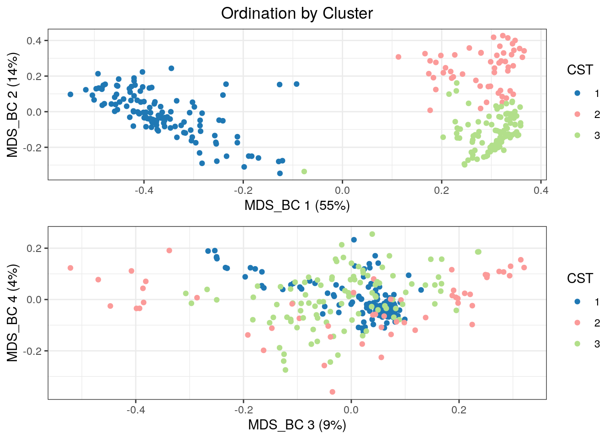
And now nMDS.
tse <- runNMDS(tse, FUN = vegan::vegdist, method = "bray",
name = "NMDS_BC", exprs_values = "counts", ncomponents = 20)## initial value 4.717325
## iter 5 value 2.138115
## iter 10 value 1.879881
## iter 15 value 1.787953
## iter 20 value 1.750342
## iter 25 value 1.730981
## iter 30 value 1.719617
## iter 30 value 1.717980
## iter 30 value 1.717898
## final value 1.717898
## convergedscater::plotReducedDim(tse, "NMDS_BC", colour_by = "CST", point_alpha = 1) + th +
labs(title = "NMDS Bray-Curtis by Cluster") +
theme(plot.title = element_text(hjust = 0.5)) + CSTColorScale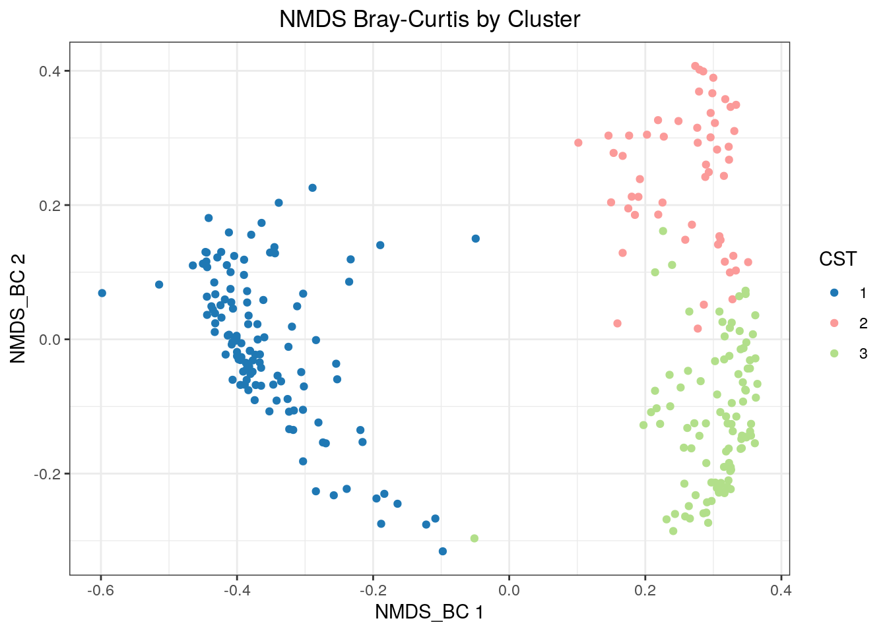
We can also look at a multitude of other distance metrics and subsets of the data.
11.3 Holmes and McMurdie Workflow
For the following distance measures, we will only consider the sequencing technique “Sanger” from the enterotype data.
dim(tse)## [1] 553 280# Subset data
tse2 <- subsetSamples(tse, colData(tse)$SeqTech == "Sanger")
# Change NAs to 0
x <- as.vector(colData(tse2)$Enterotype)
x[is.na(x)] <- 0
x <- factor(x, levels = c("1", "2", "3", "0"))
colData(tse2)$Enterotype <- xdim(tse2)## [1] 553 41table(colData(tse2)$Enterotype)##
## 1 2 3 0
## 8 6 18 911.3.1 Jensen-Shannon Distance
library(philentropy)
custom_FUN <- function (x) as.dist(philentropy::JSD(x))
tse2 <- scater::runMDS(tse2, FUN = custom_FUN, name = "MDS_JSD", exprs_values = "counts")
scater::plotReducedDim(tse2, "MDS_JSD", colour_by = "Enterotype",
shape_by = "Enterotype", point_size = 4, point_alpha = 1) +
ggtitle("Multidimensional Scaling using Jensen-Shannon Divergence") + th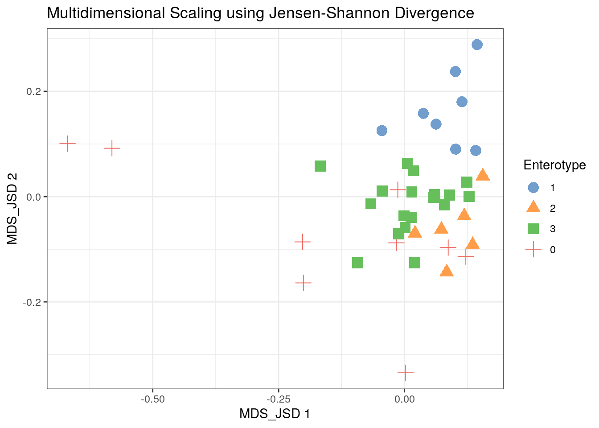
11.3.2 NonMetric Multidimensional Scaling
tse2 <- mia::runNMDS(tse2, FUN = custom_FUN, nmdsFUN = "monoMDS", name = "NMDS_JSD")
scater::plotReducedDim(tse2, "NMDS_JSD", colour_by = "Enterotype",
shape_by = "Enterotype", point_size = 4, point_alpha = 1) +
ggtitle("Non-Metric Multidimensional Scaling using Jensen-Shannon Divergence") + th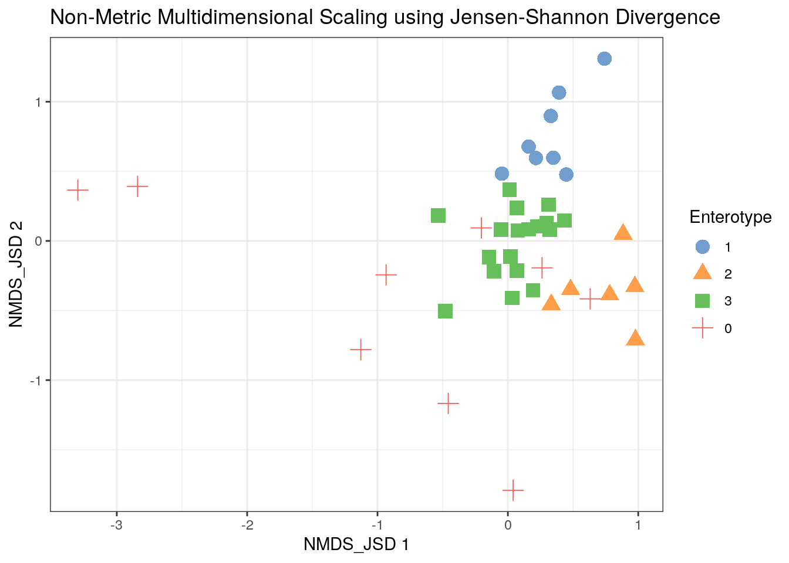
11.3.3 Chi-Squared Correspondence Results
tse2 <- mia::runCCA(tse2, name = "PCA_CS", exprs_values = "counts")
scater::plotReducedDim(tse2, "PCA_CS", colour_by = "Enterotype",
shape_by = "Enterotype", point_size = 3, point_alpha = 1) +
ggtitle("Correspondance Analysis using Chi-Squared Distance") + th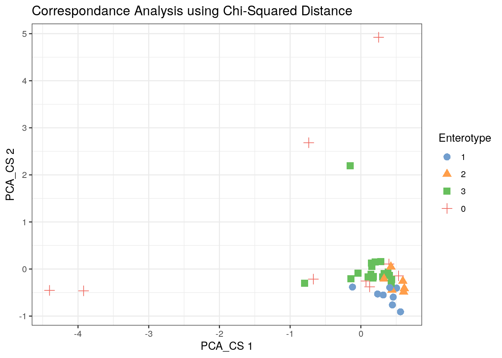
11.3.4 Bray-Curtis MDS
tse2 <- scater::runMDS(tse2, FUN = vegan::vegdist, name = "MDS_BC", exprs_values = "counts")
scater::plotReducedDim(tse2, "MDS_BC", colour_by = "Enterotype",
shape_by = "Enterotype", point_size = 4, point_alpha = 1) +
ggtitle("MDS using Bray-Curtis Dissimilarity") + th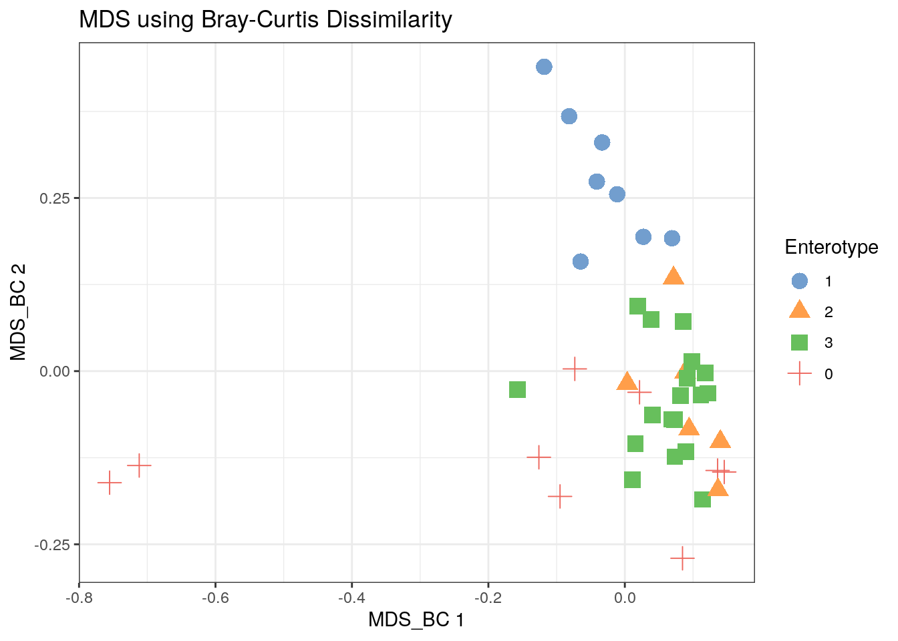
11.3.5 Bray-Curtis NMDS
tse2 <- mia::runNMDS(tse2, FUN = vegan::vegdist, nmdsFUN = "monoMDS", method = "bray", name = "NMDS_BC")
scater::plotReducedDim(tse2, "NMDS_BC", colour_by = "Enterotype",
shape_by = "Enterotype", point_size = 4, point_alpha = 1) +
ggtitle("nMDS using Bray-Curtis") + th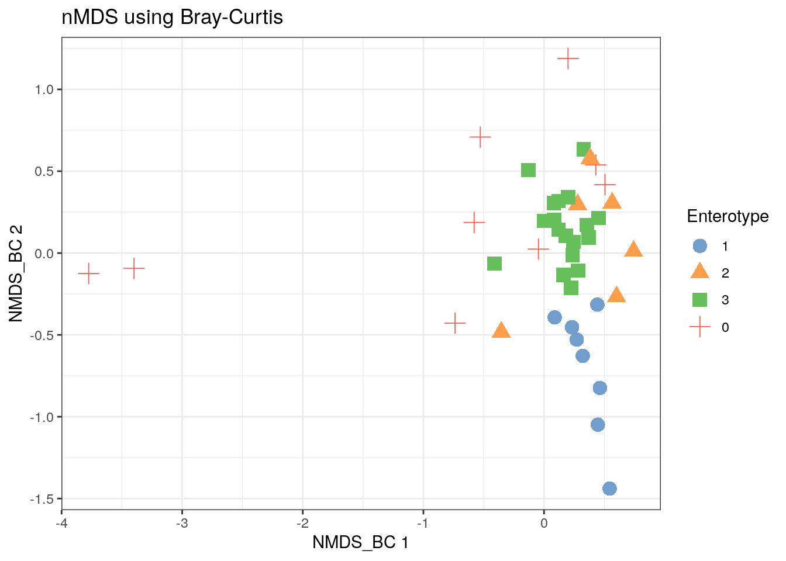
11.3.6 Other distances from the Philentropy package
library(gridExtra)
# take distances that more or less match Holmes and McMurdie
distances <- getDistMethods()[c(1, 2, 23, 42)]
# variable to store results
plist <- vector("list", length(distances))
names(plist) <- distances
# calculate each distance measure
for (i in distances[1:length(distances)]) {
custom_FUN <- function (x) as.dist(philentropy::distance(x, method = i, p = 1))
tse2 <- scater::runMDS(tse2, FUN = custom_FUN, name = i, exprs_values = "counts")
# store result in plist
plist[[i]] <- scater::plotReducedDim(tse2, i, colour_by = "Enterotype")
}
library(plyr)
# plot
df <- ldply(plist, function(x) x$data)
names(df) <- c("distance", "Axis.1", "Axis.2", "Enterotype")
p <- ggplot(df, aes(Axis.1, Axis.2, color = Enterotype, shape = Enterotype)) +
geom_point(size = 2.5, alpha = 0.5) +
facet_wrap(~distance, scales = "free") +
theme(strip.text = element_text(size = 8)) +
ggtitle("MDS on various distance metrics for Enterotype dataset") + th
p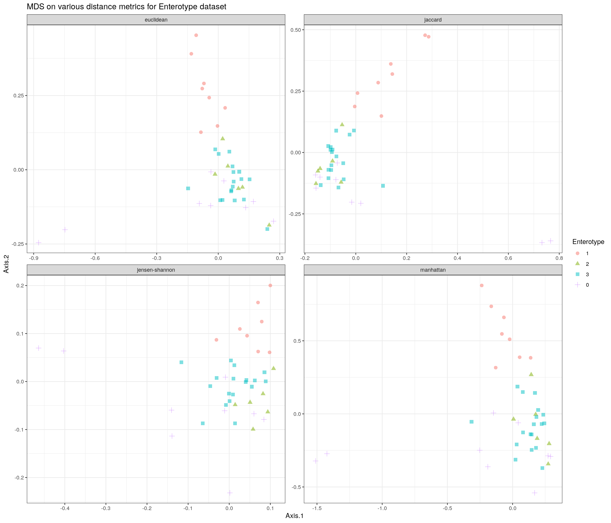
11.3.7 Add a Clustering Variable
It may be revealing to see the full data (with subsetting) clustered according to a colData variable.
# remove taxon
tse3 <- subsetTaxa(tse, rownames(tse) != "-1")
# Remove NAs
x <- as.vector(colData(tse3)$Enterotype)
x <- factor(x)
colData(tse)$Enterotype <- x# loop over distances
for (i in distances[1:length(distances)]) {
custom_FUN <- function (x) as.dist(philentropy::distance(x, method = i, p = 1))
tse3 <- scater::runMDS(tse3, FUN = custom_FUN, name = i, exprs_values = "counts")
plist[[i]] <- scater::plotReducedDim(tse3, i, colour_by = "SeqTech", shape_by = "Enterotype")
}
# plot
df <- ldply(plist, function(x) x$data)
names(df) <- c("distance", "Axis.1", "Axis.2", "SeqTech", "Enterotype")
p <- ggplot(df, aes(Axis.1, Axis.2, color = SeqTech, shape = Enterotype)) +
geom_point(size = 2, alpha = 0.5) +
facet_wrap(~distance, scales = "free") +
theme(strip.text = element_text(size = 8)) +
ggtitle("MDS on various distance metrics for Enterotype dataset") + th
p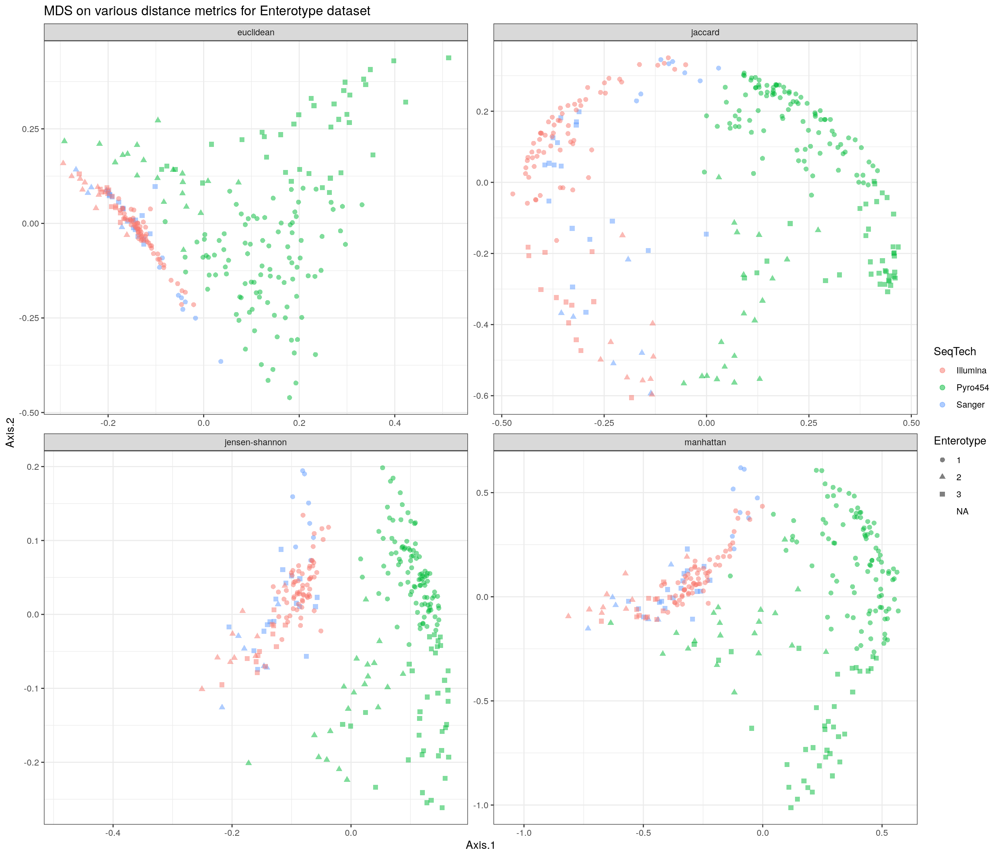
11.3.8 More Clustering
Dropping 9 outliers (the 0 enterotype), let’s visualise the clustering in a different manner. Based on our analysis above, we concluded there were 3 distinct clusters. The authors of the Nature paper published on the enterotype data created a figure similar to the following:
library(ade4)
# remove 9 outliers
tse2 <- subsetSamples(tse2, colData(tse2)$Enterotype != 0)
colData(tse2)$Enterotype <- factor(colData(tse2)$Enterotype)clus <- colData(tse2)$Enterotype
dist <- calculateJSD(tse2)
pcoa <- dudi.pco(dist, scannf = F, nf = 3)
s.class(pcoa$li, grid = F, fac = clus)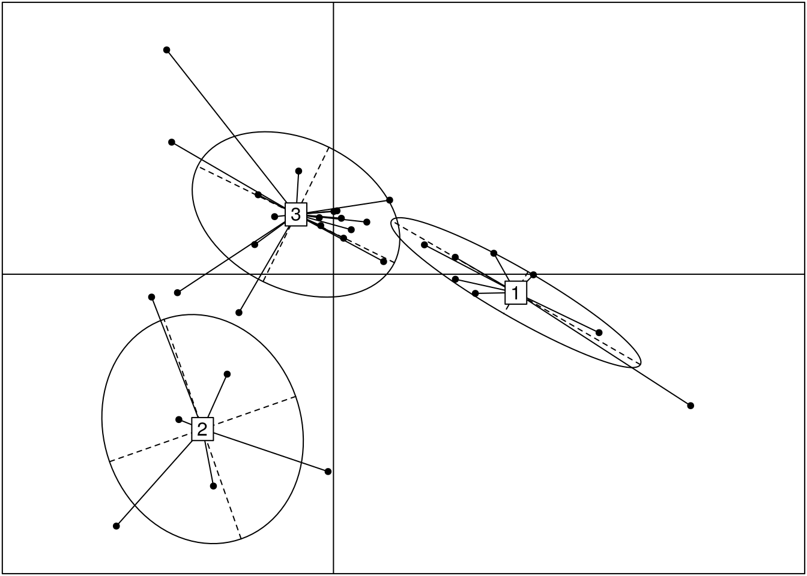
Revisit the distances without the 9 outlier values.
# loop over distances
for (i in distances[1:length(distances)]) {
custom_FUN <- function (x) as.dist(philentropy::distance(x, method = i, p = 1))
tse2 <- scater::runMDS(tse2, FUN = custom_FUN, name = i, exprs_values = "counts")
plist[[i]] <- scater::plotReducedDim(tse2, i, colour_by = "Enterotype")
}
# plot
df <- ldply(plist, function(x) x$data)
names(df) <- c("distance", "Axis.1", "Axis.2", "Enterotype")
p <- ggplot(df, aes(Axis.1, Axis.2, color = Enterotype, shape = Enterotype)) +
geom_point(size = 2.5, alpha = 0.5) +
facet_wrap(~distance, scales = "free") +
theme(strip.text = element_text(size = 8)) +
ggtitle("MDS on various distance metrics for Enterotype dataset with 9 samples removed") + th
p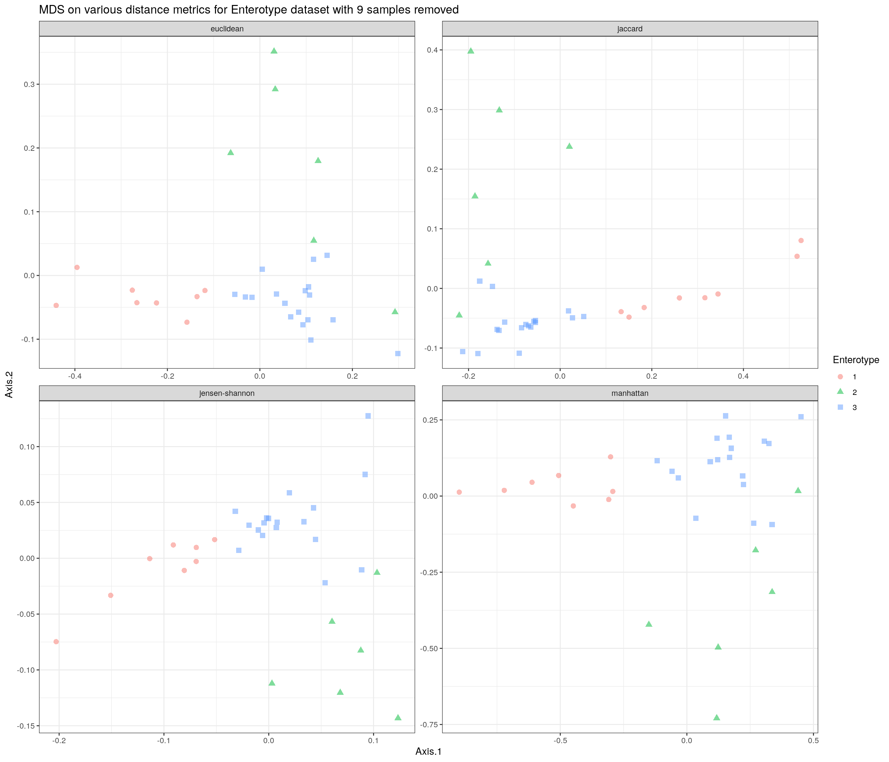
Would we use the same number of clusters as before with 9 values missing?
## Slightly faster way to use pam
pam1 <- function(x,k) list(cluster = pam(x,k, cluster.only=TRUE))
pamPCoA = function(x, k) {
list(cluster = pam(x[,1:2], k, cluster.only = TRUE))
}
# gap statistic method
gs <- clusGap(assays(tse2)$counts, FUN = pamPCoA, K.max = 10)
fviz_gap_stat(gs)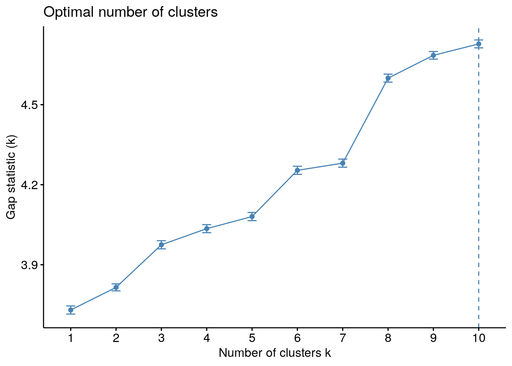
We still see a jump at three so it is still a good choice for the number of clusters.
11.4 CST Analysis
Looking at heat maps of the CSTs can reveal structure on a different level. Using all of the data again (for the top 20 taxa) and taking the z transformation of the clr transformed counts, we have
# Find top 20 taxa
rel_taxa <- getTopTaxa(tse, top = 20)
# Z transform of CLR counts
mat <- transformCounts(tse, abund_values = "counts", method = "clr", pseudocount = 1)
mat <- transformFeatures(mat, abund_values = "clr", method = "z")
# Select top 20 taxa
mat <- subsetTaxa(mat, is.element(rownames(tse), rel_taxa))
mat <- assays(mat)$z
# Order CSTs
mat <- mat[, order(clust)]
colnames(mat) <- names(sort(clust))# Plot
CSTs <- as.data.frame(sort(clust))
names(CSTs) <- "CST"
breaks <- seq(-2, 2, length.out = 10)
# Make grid for heatmap
setHook("grid.newpage", function() pushViewport(viewport(x = 1, y = 1, width = 0.9,
height = 0.9, name = "vp",
just = c("right","top"))),
action = "prepend")
pheatmap(mat, color = rev(brewer.pal(9, "RdBu")), breaks = breaks, main = "All CSTs", treeheight_row = 0, treeheight_col = 0, show_colnames = 0, annotation_col = CSTs, cluster_cols = F)
setHook("grid.newpage", NULL, "replace")
grid.text("Sample", x = 0.39, y = -0.04, gp = gpar(fontsize = 16))
grid.text("Genus", x = -0.04, y = 0.47, rot = 90, gp = gpar(fontsize = 16))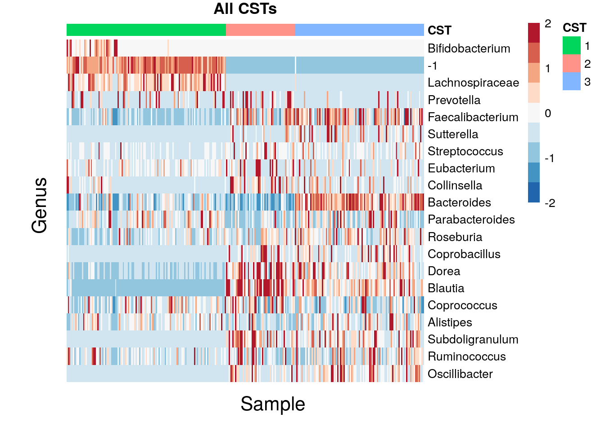
11.5 Session Info
sessionInfo()## R Under development (unstable) (2022-01-07 r81454)
## Platform: x86_64-pc-linux-gnu (64-bit)
## Running under: Ubuntu 20.04.3 LTS
##
## Matrix products: default
## BLAS/LAPACK: /usr/lib/x86_64-linux-gnu/openblas-pthread/libopenblasp-r0.3.8.so
##
## locale:
## [1] LC_CTYPE=en_US.UTF-8 LC_NUMERIC=C
## [3] LC_TIME=en_US.UTF-8 LC_COLLATE=en_US.UTF-8
## [5] LC_MONETARY=en_US.UTF-8 LC_MESSAGES=en_US.UTF-8
## [7] LC_PAPER=en_US.UTF-8 LC_NAME=C
## [9] LC_ADDRESS=C LC_TELEPHONE=C
## [11] LC_MEASUREMENT=en_US.UTF-8 LC_IDENTIFICATION=C
##
## attached base packages:
## [1] grid stats4 stats graphics grDevices utils datasets
## [8] methods base
##
## other attached packages:
## [1] ade4_1.7-18 plyr_1.8.6
## [3] gridExtra_2.3 philentropy_0.5.0
## [5] cowplot_1.1.1 scater_1.23.2
## [7] scuttle_1.5.0 cluster_2.1.2
## [9] factoextra_1.0.7 RColorBrewer_1.1-2
## [11] pheatmap_1.0.12 miaViz_1.3.2
## [13] ggraph_2.0.5 ggplot2_3.3.5
## [15] mia_1.3.13 MultiAssayExperiment_1.21.5
## [17] TreeSummarizedExperiment_2.3.0 Biostrings_2.63.1
## [19] XVector_0.35.0 SingleCellExperiment_1.17.2
## [21] SummarizedExperiment_1.25.3 Biobase_2.55.0
## [23] GenomicRanges_1.47.5 GenomeInfoDb_1.31.1
## [25] IRanges_2.29.1 S4Vectors_0.33.9
## [27] BiocGenerics_0.41.2 MatrixGenerics_1.7.0
## [29] matrixStats_0.61.0
##
## loaded via a namespace (and not attached):
## [1] backports_1.4.1 igraph_1.2.11
## [3] lazyeval_0.2.2 splines_4.2.0
## [5] BiocParallel_1.29.10 digest_0.6.29
## [7] yulab.utils_0.0.4 htmltools_0.5.2
## [9] viridis_0.6.2 fansi_1.0.0
## [11] magrittr_2.0.1 memoise_2.0.1
## [13] ScaledMatrix_1.3.0 DECIPHER_2.23.0
## [15] graphlayouts_0.8.0 colorspace_2.0-2
## [17] blob_1.2.2 ggrepel_0.9.1
## [19] xfun_0.29 dplyr_1.0.7
## [21] crayon_1.4.2 RCurl_1.98-1.5
## [23] jsonlite_1.7.2 ape_5.6-1
## [25] glue_1.6.0 polyclip_1.10-0
## [27] gtable_0.3.0 zlibbioc_1.41.0
## [29] DelayedArray_0.21.2 car_3.0-12
## [31] BiocSingular_1.11.0 abind_1.4-5
## [33] scales_1.1.1 DBI_1.1.2
## [35] rstatix_0.7.0 Rcpp_1.0.7
## [37] viridisLite_0.4.0 decontam_1.15.0
## [39] gridGraphics_0.5-1 tidytree_0.3.7
## [41] bit_4.0.4 rsvd_1.0.5
## [43] ellipsis_0.3.2 pkgconfig_2.0.3
## [45] farver_2.1.0 sass_0.4.0
## [47] utf8_1.2.2 ggplotify_0.1.0
## [49] tidyselect_1.1.1 labeling_0.4.2
## [51] rlang_0.4.12 reshape2_1.4.4
## [53] munsell_0.5.0 tools_4.2.0
## [55] cachem_1.0.6 DirichletMultinomial_1.37.0
## [57] generics_0.1.1 RSQLite_2.2.9
## [59] broom_0.7.11 evaluate_0.14
## [61] stringr_1.4.0 fastmap_1.1.0
## [63] yaml_2.2.1 ggtree_3.3.1
## [65] knitr_1.37 bit64_4.0.5
## [67] tidygraph_1.2.0 purrr_0.3.4
## [69] nlme_3.1-153 sparseMatrixStats_1.7.0
## [71] aplot_0.1.2 compiler_4.2.0
## [73] beeswarm_0.4.0 ggsignif_0.6.3
## [75] treeio_1.19.1 tibble_3.1.6
## [77] tweenr_1.0.2 bslib_0.3.1
## [79] stringi_1.7.6 highr_0.9
## [81] lattice_0.20-45 Matrix_1.4-0
## [83] vegan_2.5-7 permute_0.9-5
## [85] vctrs_0.3.8 pillar_1.6.4
## [87] lifecycle_1.0.1 jquerylib_0.1.4
## [89] BiocNeighbors_1.13.0 bitops_1.0-7
## [91] irlba_2.3.5 patchwork_1.1.1
## [93] R6_2.5.1 bookdown_0.24
## [95] vipor_0.4.5 MASS_7.3-54
## [97] assertthat_0.2.1 withr_2.4.3
## [99] GenomeInfoDbData_1.2.7 mgcv_1.8-38
## [101] parallel_4.2.0 ggfun_0.0.4
## [103] beachmat_2.11.0 tidyr_1.1.4
## [105] rmarkdown_2.11 DelayedMatrixStats_1.17.0
## [107] carData_3.0-5 ggpubr_0.4.0
## [109] ggnewscale_0.4.5 ggforce_0.3.3
## [111] ggbeeswarm_0.6.011.6 Bibliography
Robert L. Thorndike. 1953. “Who Belongs in the Family?” Psychometrika. 18 (4): 267–276. doi:10.1007/BF02289263
Peter J. Rousseeuw. 1987. “Silhouettes: a Graphical Aid to the Interpretation and Validation of Cluster Analysis.” Computational and Applied Mathematics. 20: 53–65. doi:10.1016/0377-0427(87)90125-7.
Robert Tibshirani, Guenther Walther, and Trevor Hastie. 2002. Estimating the number of clusters in a data set via the gap statistic method. (63): 411-423. doi:10.1111/1467-9868.00293.
Susan Holmes and Joey McMurdie. 2015. Reproducible Research: Enterotype Example. http://statweb.stanford.edu/~susan/papers/EnterotypeRR.html.
Daniel B. DiGiulio et al. 2015. Temporal and spatial variation of the human microbiota during pregnancy. (112): 11060–11065. doi:10.1073/pnas.1502875112
Arumugam, M., et al. (2011). Enterotypes of the human gut microbiome.